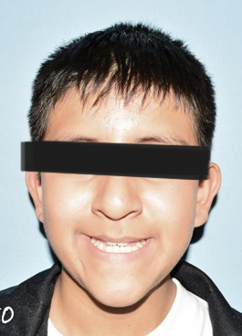

Caso Clínico: Moises
Paciente de 13 años con Maloclusión Clase I y apiñamiento severo.

Perfil Facial - Antes
Perfil Facial - Después
Sonrisa - Antes
Sonrisa - Después
Resumen del Tratamiento
Diagnóstico
Paciente de 13 años con Maloclusión Clase I, apiñamiento severo de 12mm en la arcada superior y 10mm en la inferior, y mordida cruzada.
Plan de Tratamiento
Se planificó un tratamiento de ortodoncia con aparatología fija (brackets Roth .022) y la extracción de 4 premolares para conseguir el espacio necesario para la alineación.
Duración
El tratamiento se completó en un periodo de 24 meses, logrando todos los objetivos planteados.
Resultado Final
Se logró una oclusión estable y funcional, corrigiendo completamente el apiñamiento y la mordida cruzada, resultando en una sonrisa estética y saludable.